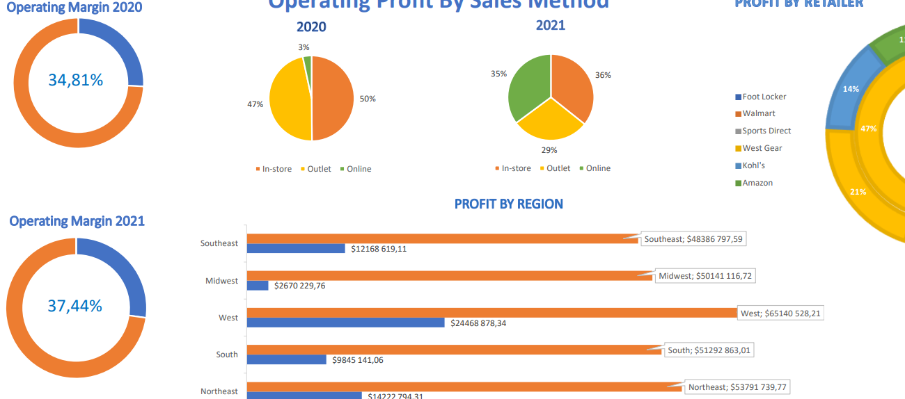
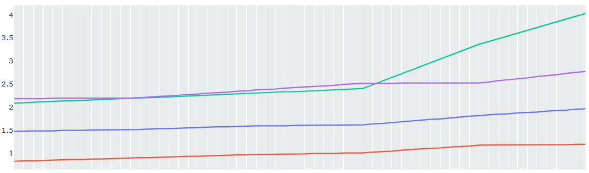
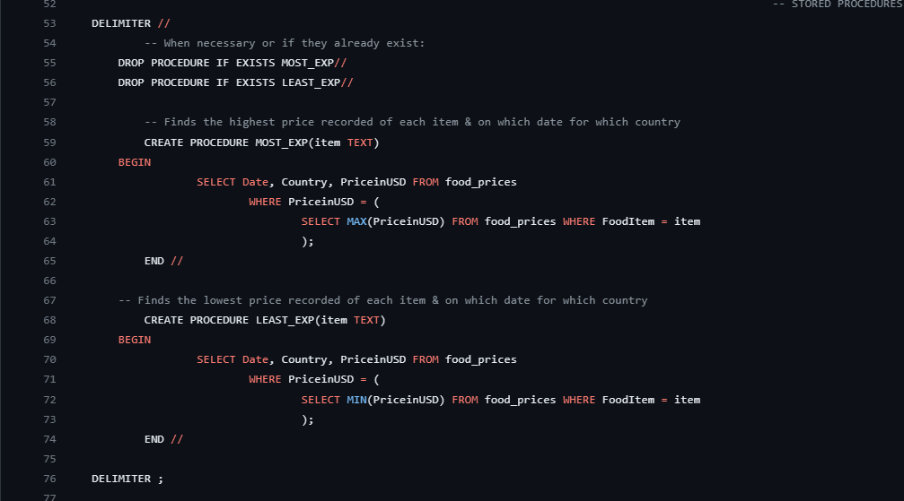
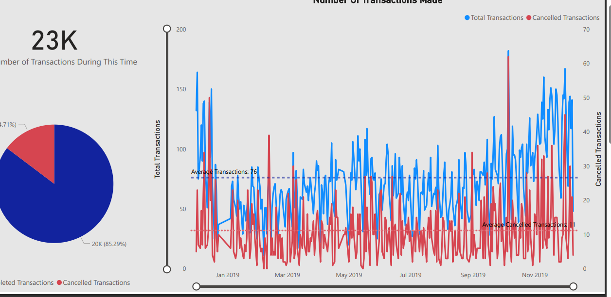
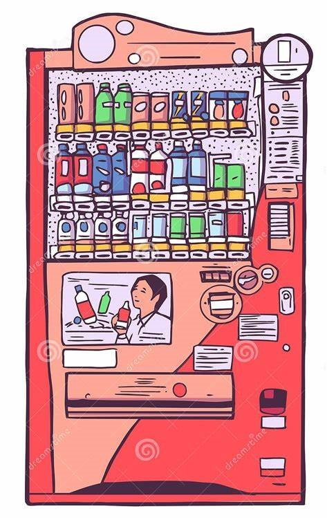
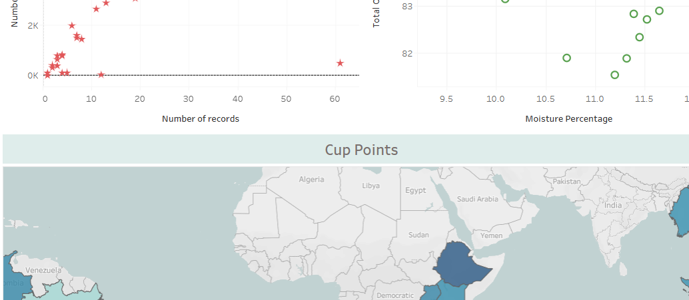

The dataset used here is for adidas sales in the United States, for the period of 2020 and 2021. This dashboard serves as a summary for the important keypoints of this data,
like how do the sales compare between 2020 and 2021, profit generated, and which retailers generated the most profit, etc. Made entirely using Microsoft Excel, it's informative while keeping things minimal.

.png)
Showcased here is an excel worksheet with a summary for the data on the top 500 bad passwords people commonly use.
The summary includes the count of how many passwords fit into certain types/categories, like the percentage of passwords that are people's names, favourite food, etc.
This analysis can be very useful in testing ML algorithms into being able to recognise bad passwords and to help educate people about cybersecurity.

This dashboard application was built using the python dash framework. It includes visualisations
on the price trends of food items in Australia, Canada, Japan, Sweden & South Africa, spanning from 2018 until 2022. Only 4 essential food items
were included in the dataset, namely bread, milk, potatoes and eggs.
This data can add value in the discussions on the state of economies, cost of living, quality of produce and other comparisons between these countries.
South Africa, for instance, has a much lower cost of living according to this dataset.

MySQL was used to query the food prices data. Some of the questions posed were about the highest recorded prices in each country,
and the quality count of the items amongst other things. Stored procedures and views were also created to help better analyse the set

This static report is about the costumer transactions data for an anonymous online e-comm business based on the UK. Quite a lot of businesses are spreading their services over to e-commerce,
and this report provides a nice overview into how they thrive. For example, according to this set, this particular business has access to customers from a wide range of locations even though it's reletively small.
The full .pbix file is available for view on the same repository as this one.

Details on this application can be found in the README.md file on the source code. Built with basic javascript & HTML, this simulates the functionality of a vending machine, mainly with how it's able to know the multiplicity of certain bank notes when returning change to a customer.

Coffee is one of the most widely consumed products out there, especially by workers from all types of industries.
This visualisation gives some insight into the production of coffee based on data from the Coffee Quality Institute on May 2023.
Cup points are used to measure coffee quality based on quality measures like aftertaste, sweetness, e tc. Points range from 1(Terrible) to 10(Excellent) and the dashboard gives detail to the quality of coffee produced by these countries.
Other interesting insights would be the fact that a lot of this coffee is produced from equatorial countries.